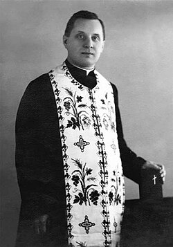

Священник нашого краю, підпільний єпископ УГКЦ

7 липня 1893, Старуня — 22 серпня 1964, Старуня. Проголошений блаженним 27 червня 2001 року
Симеон Лукач – релігійний діяч, педагог, підпільний єпископ Української греко-католицької церкви.
Народився Симеон Лукач 7 липня 1893 року в селі Старуня Богородчанського повіту (донедавна Солотвинського району Івано-Франківської області). Допитливий селянський син мав величезний нахил до науки. Ще коли навчався в школі в рідному селі, а згодом – в Богородчанах, два роки навчання зарахували за три.
У Коломийській гімназії вчився так добре, що завоював популярність як репетитор, і завдяки репетиторству міг самостійно оплатити навчання. А навчаючись у духовній семінарії, куди вступив 1913 року, став зразком молитовності. Щоправда, через Першу світову війну навчання у семінарії вдалося закінчити лише 1919 року.
Згодом, коли був уже священником в с. Ляцьке-Шляхетське біля Тлумача (нині – село Липівка), Симеона Лукача в грудні 1920 року призначили викладачем у рідній Станіславівській духовній семінарії, де працював до квітня 1945 року. На той час у семінарії був високий рівень викладацького складу. Серед викладачів тільки о. Симеон Лукач, який викладав моральне богослів'я та був духівником, не був доктором наук. Його лекції, спосіб життя, проповіді стали справжнім зразком священничого ідеалу. Отця Симеона потай від нього називали «магістром моральності».
Відчуваючи небезпеку для УГКЦ, перед своїм арештом блаженний єпископ Григорій (Хомишин) весною 1945 року таємно висвятив о. Симеона та ще двох осіб на єпископів. Оскільки свячення були повністю таємні, енкаведисти не знали про них і не заарештували нових єпископів одразу.
Переслідуваний владою, владика Симеон перебрався до рідного села, де жив у брата Василя до кінця лютого 1949 року. Не припиняв виконувати священничих обов'язків, душпастирювати. В Старуні відправляв Службу Божу спочатку в церкві, а пізніше – підпільно у своєму помешканні. В лютому 1949 року його викликали в сільську раду, погрожуючи виселенням із села. Тимчасово владика переїхав до Надвірної. Саме там за активну священничу працю та відмову перейти на «державне» православ'я його і заарештували працівники НКВД в жовтні 1949 року. Репресивна машина квапилася ізолювати небезпечного провідника якнайшвидше, не встигаючи навіть вчасно підготувати юридичну санкцію на арешт: ордер видали пізніше.
Засуджений на початку 1950 року на 10 років. Попри слабке здоров'я його скерували на непосильну роботу в табори Красноярського краю. Працював на лісоповалі. Витримав, щоб після звільнення 11 лютого 1955 року знову взятися за роботу – працю священика з щоденним служінням Богові й людям. Не став підліковуватись чи «сидіти тихо», як йому пропонували. Як інтелектуал, писав книгу «Ложні пророки». Таємно проводив навчання для майбутніх священиків… І їхав чи йшов всюди, де на нього чекали вірні.
Вдруге був заарештований у липні 1962 року. Після обшуку і конфіскації всіх речей, владику Симеона відіслали в тюрму до Івано-Франківська. У в'язниці владика важко захворів. Тюремні лікарі визначили, що це астма. Насправді це був туберкульоз легень.
У березні 1964 року через критичний стан здоров'я тюремники привезли владику Симеона помирати в рідне село Старуня. Незважаючи на важку хворобу, єпископ виконував свої священничі обов'язки: щодня служив Літургію, сповідав людей, суворо дотримувався посту.
22 серпня 1964 року помер в селі Старуня, де й похований. 27 червня 2001 року проголошений блаженним.